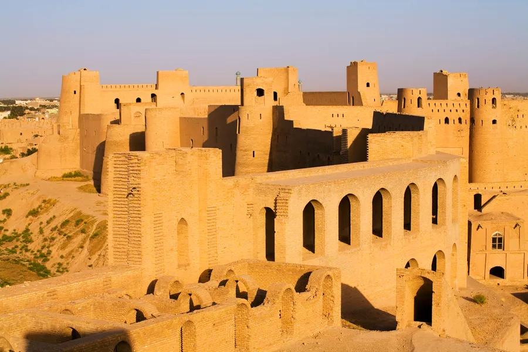
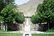
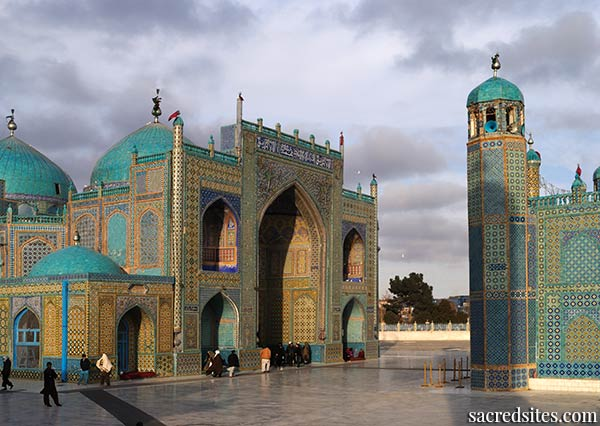

🕌 مزار شریف - مسجد کبود
مسجد حضرت علی با کاشیکاری آبی، نگین شمال افغانستان است.

🎨 هنر مزار
مزار مرکز شعر عرفانی و جشنهای فرهنگی مانند نوروز است.
🍲 غذای محلی
بولانی و شوروا از غذاهای خوشمزه و اصیل منطقهاند.
با افتخار، نگاهی به هرات، کابل، مزار شریف و بلخ
قلعهی اسکندر، میراث فرهنگی غرب افغانستان با قدمتی بیش از ۲۳۰۰ سال.
هرات مهد مینیاتور و خطاطی اسلامیست. هنرمندان دوره تیموری آثاری خارقالعاده خلق کردهاند.
آش ماست، کباب زغالی و منتو از غذاهای محبوب سنتی هرات هستند که طعمی ویژه دارند.
آرامگاه بابر و باغ ایرانی-مغولی، نماد زیبایی تاریخی در کابل.
کابل جایگاه هنر معماری مغولی، کتیبهها و طراحی باغهای هندسیست.
قابلیپلو با کشمش و گوشت، یکی از غذاهای سنتی و دلچسب کابل است.
مسجد حضرت علی با کاشیکاری آبی، نگین شمال افغانستان است.
مزار مرکز شعر عرفانی و جشنهای فرهنگی مانند نوروز است.
بولانی و شوروا از غذاهای خوشمزه و اصیل منطقهاند.
بلخ، شهر باستانی با مرکز معنویت بودایی و زرتشتی در آسیای میانه است.
نقاشیهای بودایی، حجاری و معماری سنگی از جلوههای هنری بلخ باستاناند.
غذاهای گیاهی مثل آش سبزی و نان تنوری از خوراکهای محبوب این منطقهاند.